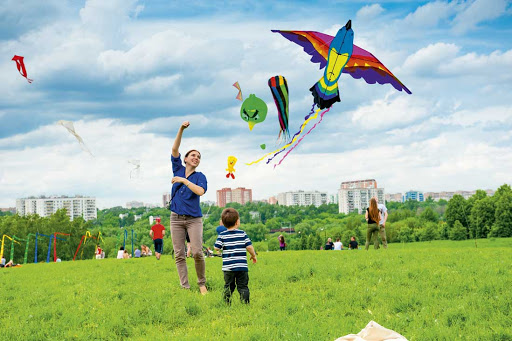

Volar CometasMás allá de ser un juego tradicional que, generalmente, llega con los vientos de agosto, esta es una práctica que aporta grandes beneficios a los niños: desarrollo de habilidades motoras, aprendizaje colaborativo, tolerancia a la frustración y fortalecimiento de valores como la paciencia, la perseverancia y el trabajo en equipo. No obstante, para algunos pedagogos y educadores, cada vez menos padres construyen y salen a volar cometa con sus hijos, especialmente en las grandes ciudades, perdiéndose las ventajas no solo físicas sino socioemocionales que ofrece. En la temporada del festival de los vientos la estirpe de cometeros alcanza a vender unas 10.000 cometas, ellos se ubican en diferentes sectores de la ciudad en especial Chipre para vender y asesorar a los cometistas, las más vendidas son las cuadradas hechas en plástico, su preocupación cada vez es mayor en cuanto a la posibilidad de seguir llevando cometas a los niños, jóvenes y adultos ya que la oficina de Espacio Público no entiende el valor de esta tradición y les impide vender en parques. Este año solo fue otorgado un permiso para toda la familia sin comprender que se necesitan varios, puesto que la familia de cometeros es tan grande que se distribuyen los sectores por núcleos familiares, en una zona están sus padres, en otra sus hermanos, tíos y primos entregando cuadrados de colores para cubrir los cielos. |
 |